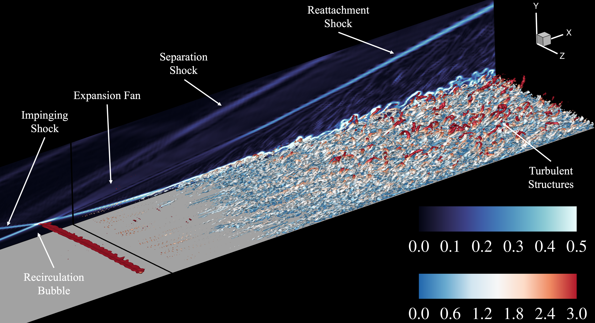

Gradient-Based Reconstruction
High-order reconstruction for compressible flows.
Computational fluid dynamics · Numerical methods
I develop physics-consistent numerical algorithms for high-speed compressible, multicomponent, and multiphase flows, connecting mathematical structure to robust, efficient simulation software.
Hypersonic shock–boundary-layer interaction and moving-boundary compressible-flow simulations.

Research
Numerical methods for high-speed compressible, multicomponent, and multiphase flows.
High-order reconstruction for compressible flows.
High-frequency damping in high-order conservative finite-difference schemes.
Acoustic, entropy, and vortical waves.
Interface-capturing reconstruction and multidimensional upwinding.
Wall-modelled large-eddy simulation of hypersonic boundary-layer transition.
Selected publications
Peer-reviewed work spanning wave-appropriate reconstruction, interface capturing, and high-speed compressible flows.
Fully conservative and semi-conservative eigenstructures.
View publication →Physics-constrained acoustic dissipation and rank-1 entropy-wave correction.
View publication →A multidimensional approach for compressible multiphase flows.
View publication →For questions about the research, publications, seminars, or collaborations.